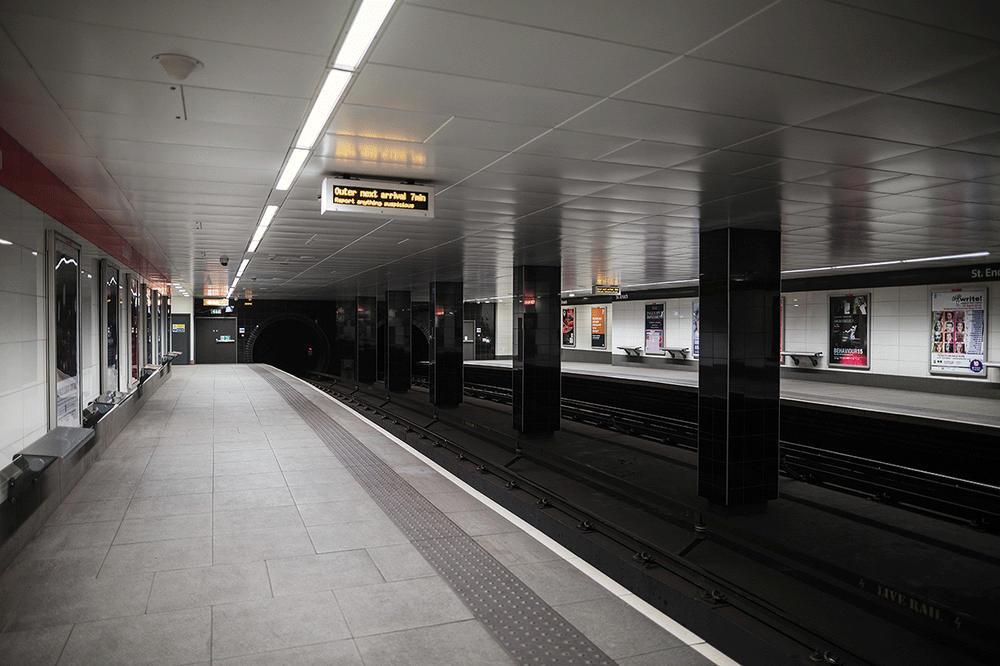

<div class="row">
  <div class="column">
    <maphilight
      [config]="config"
      id="stEnochUndergroundMap"
    >
      

      <map name="image-map">
        <area alt="Escape tunnel" title="Escape tunnel" (click)="onSelect()"
              coords="493,389,505,396,511,406,515,430,493,430" shape="poly" routerLink="/centralGlasgow">
      </map>
    </maphilight>
  </div>
</div>

<a class="button hvr-grow hvr-icon-back" routerLink="/centralGlasgow">
  <i class="fa fa-chevron-circle-left hvr-icon"></i>Go back to map</a>
